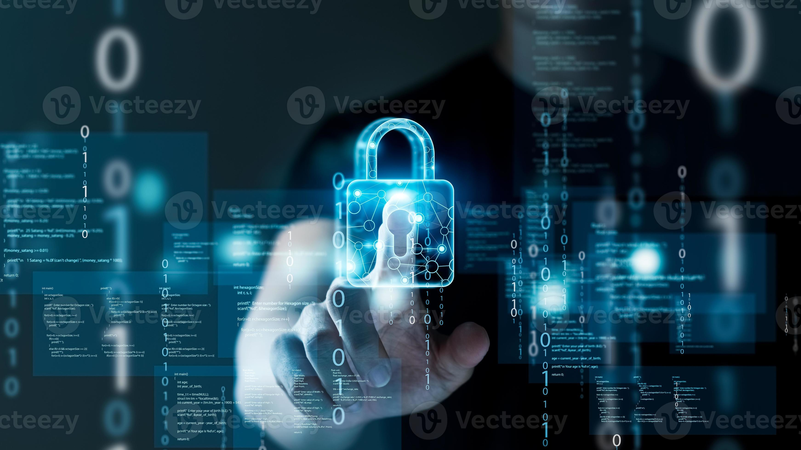
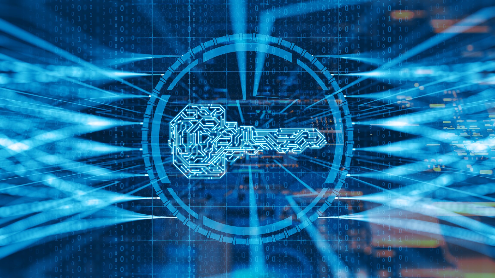
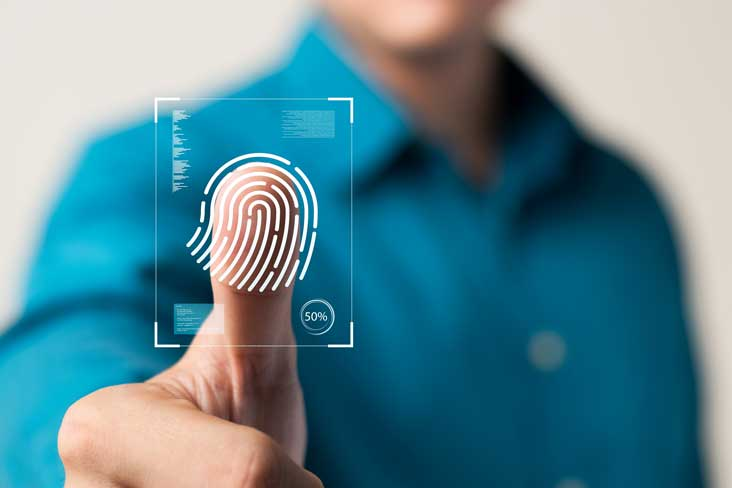

Access Control
This is a strong control related to physical access in preventing unauthorized access to company assets. All team members are given RF id Tags to authenticate access to premises and counter. It is mandatory to keep your identity card in a safe position in your own custody. ID holder is responsible for any losses incurred using the ID. In case of misplacements of the staff ID, you are required to inform the same to itsupport@bestdeal.net.
Keys Management
Key handling will be an important aspect of security. As it helps company to secure company assets. All physical keys should be handled by the team member in duty and key movements are required to be recorded in the system. Retainetion of keys in office drawers are not accepted. In case of misplaced keys, they should be brought to the attention of the Manager immediately. Any losses in replacing keys should be borne by the last key holder. Duplication of keys are striclty prohibited and disiplinary actions will be taken againsts such attempts.
Access to Secure Areas
Only authorized personals are allowed to high security areas. Either left or right thumb impression recognition is required to access such places as server room, safe room. Such authentication is required to open the cash safe, in addition to physical keys. Security alarm, policy link, and CCTV footage are available covering the premises. Team members are required to activate the security alarm system before leaving the premises.
Ticket Issuance
This is the vital role of the team member. Provide customer service in a way of maintaining security is the main objective of the company. Ticket issuance will be done by the team member. All ongoing tickets should be kept under the team members’ custody. Unique reference number and barcode printed on the ticket should be fed to the system at the time of issuance.The same reference number will be used for cancellations, refunds and complaints if any,